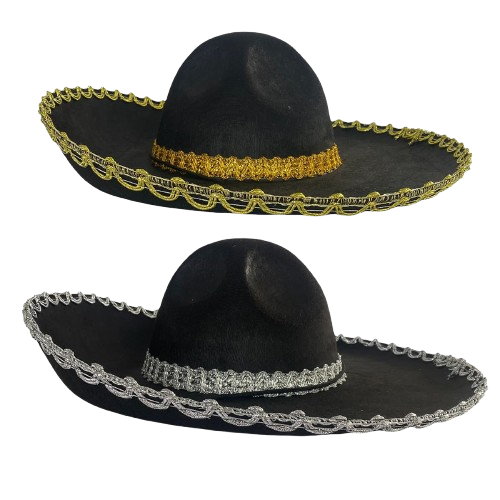

En general, un sombrero sirve para cubrir la cabeza, ya sea por diversos motivos, que van desde protección solar hasta estatus social.
En el pasado e incluso hoy en día, los sombreros se han utilizado como indicadores del estatus social de alguien, como en el caso de las fuerzas armadas, donde los sombreros incluso indican la nacionalidad. O incluso como factores de protección, para albañiles, bomberos, electricistas…. También es habitual utilizar sombreros durante ceremonias, fiestas, graduaciones…. Por motivos de cuidado, como por ejemplo un gorro de cocinero. Y también se utiliza por varios motivos más, como la moda, el respeto, la protección solar, el estilo…
Los primeiros sombreros del mundo
No hay mucha información sobre cuándo se inventaron los primeros sombreros, sin embargo, existen algunos registros, como la figura de la Venus de Willendorf, de entre 27 y 30 mil años. En la cual, dicha imagen sugiere a una mujer con un gorro de punto.
Uno de los primeros indicios de los primeros sombreros confirmados conocidos lo llevó un hombre apodado Ötzi. El cuerpo y el sombrero fueron encontrados congelados, donde estaban desde aprox. 3250 aC Era una gorra cosida de piel de oso con una correa para la barbilla, que recordaba a una gorra rusa sin ala.
Sin embargo, los primeros sombreros utilizados culturalmente por un pueblo, de los que tenemos constancia, son originarios de los antiguos imperios, uno de los más conocidos es el sombrero frigio, donde también aparecieron el pileus y el petasus (el primer sombrero que tuvo ala) utilizados por los griegos para visualizar la relación de esclavitud de los esclavizados.
Los Charros
Charro es considerado históricamente un sombrero usado por los vaqueros típicos del interior de México. Todo lo hacían a lomos de un caballo y trabajaban como vaqueros, vistiendo el sombrero mexicano. Hoy en día, el uso de charros mientras montan a caballo está casi directamente vinculado a un deporte nacional en México, la charreada. El deporte está regulado por sus propias reglas tradicionales, vigentes desde la época colonial de la Revolución Mexicana.
Etimología
La palabra charro fue documentada por primera vez en un libro español llamado “Vocabulario de refranes y fazras proverbiales” (1627) de Gonzalo Correas, como sinónimo de idiota o estúpido. Un siglo más tarde, en el primer diccionario español, el “Diccionario de Autoridades” publicado por la Real Academia Española, Charro era definido como:
“Los maleducados. Quien creció en un lugar con poca vigilancia. En los tribunales y en otros lugares, este pronombre se utiliza para cualquiera que venga del campo.”
En la primera edición del diccionario, publicada en 1780, se mantuvo esta definición original: “Los arrogantes y rústicos, lo que suelen ser los ciudadanos”. Pero le añadieron un segundo significado: “Adjetivo aplicado a objetos muy anticuados y de mal gusto”. Pero debido a esto, el significado despectivo permaneció para la gente del interior, se les siguió viendo como ignorantes, poco sofisticados y groseros.
Diccionarios español-inglés como el “Diccionario Español e Inglés” (1786) definían al Charro como: “Rústico, de aspecto campestre”. Mientras que en 1802 “Un Nuevo Diccionario de las Lenguas Española e Inglesa” lo definía como: “Persona grosera, idiota y maleducada”. Y “Gashy, lleno de adornos mezquinos y aburridos”.
En 1745, el jesuita vasco Manuel Larramendi argumentó que la palabra era de origen vasco y significaba “cosa vil y despreciable”, y escribió que a los campesinos se les llamaba así porque desprecio. Mientras que el historiador y filósofo Antonio de Capmany y Montpalau sostuvo que la palabra era de origen árabe, y que originalmente significaba “Mala, de malicia moral y de sus costumbres”.
No México, desde o 18º século, o termo charro foi usado de forma pejorativa aos Rancheros, habitantes do campo e das haciendas, que faziam todas as tarefas montados em cavalos. Por serem camponeses, foram considerados ignorantes, arrogantes e insofisticados. Logo após, a palavra passou a ser redefinida no México. De ser uma palavra de significado pejorativo para um termo não muito conhecido, e sinônimo de Ranchero, ou vaqueiro, e “Cavaleiro”. Em 1850, o historiador e escritor que morava no México, Niceto de Zamacois, definiu Charro: “Charros: gente del campo que se compone mucho para montar á caballo. “Camponeses que são habilidosos o suficiente para montar em um cavalo”.
Orígenes
El Virreinato de Nueva España prohibió a los nativos americanos montar o comprar caballos, con excepción de la nobleza tlaxcalteca, otros jefes aliados y sus descendientes. Sin embargo, la cría de ganado requería el uso de caballos, lo que llevó a los agricultores a contratar vaqueros mestizos y, a veces, indígenas. Algunos de los requisitos para montar a caballo eran estar empleado en una plantación, utilizar celdas diferentes a las utilizadas por los militares y usar ropa de cuero, lo que dio origen al término “cuerudo”.
Com o tempo, donos de terras e seus empregados, começando com aqueles que viviam no planalto Mexicano e logo após, o resto do país, adaptaram o seu estilo cowboy para melhor se adequar ao terreno e temperatura mexicano, se afastando do estilo espnahol de criação de gado. Depois da Guerra da Independência Mexicana, andar a cavalo tornou-se ainda mais comum. Vários cowboys se tornaram mercenários montados, mensageiros e fazendeiros. Antes conhecidos como Chinacos, logo, esses cowboys se tornaram os “vaqueros”.
Características del Charro
Cono largo de alas anchas, también son usados para protegerse del Sol. Los camponeses hacen el proprio con palla, pero los sombreros de los ricos son de sintió. Fueron popularizados por el cinema norte-americano. Actualmente es muy raro ver álguien usando un charro. Solo en charreadas, representaciones folcloricas y en la música.

Otros sombreros
Un bicornio es un sombrero de doble pico que fue usado en los siglos XVIII y XIX, principalmente por personal militar y oficiales. Es conocido por su diseño elegante y simboliza la autoridad y formalidad de la época.
El canotier es un sombrero de paja de copa recta y ala corta, generalmente adornado con una cinta. Fue muy popular a finales del siglo XIX y principios del XX, asociado a la elegancia y el estilo casual.
El capotain es un sombrero de copa alta y estrecha, de ala corta, popular en el siglo XVII, especialmente entre puritanos y colonos. A menudo se asocia con una apariencia histórica y formal.

El cazador de ciervos es un sombrero de lana con ala doblada y una corona estructurada, usado tradicionalmente por los cazadores en Inglaterra, especialmente cuando cazan ciervos (de ahí el nombre). Famoso por ser el estilo característico de Sherlock Holmes, es un símbolo de misterio y actividad al aire libre.